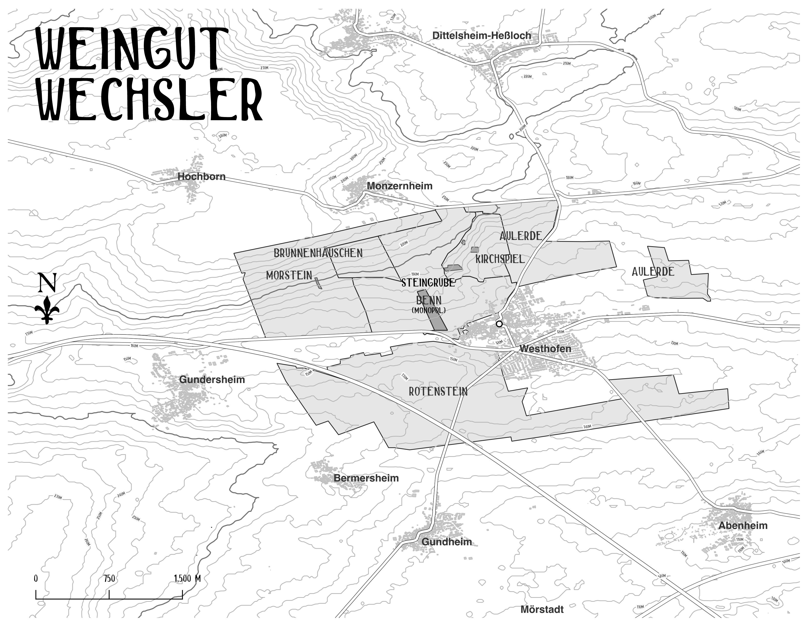

Patrick Baudouin


Patrick Baudouin’s estate is located in the heart of the Coteaux du Layon, but his focus is on dry Chenin Blanc. Since taking over his family’s property in 1990, he has become a leading voice for authentic, terroir-driven wines in Anjou. He eliminated all chemical synthetic products in 1997 and has been certified organic since 2002. His work is centered on expressing the complex volcanic and schist-based geologies of the region, emphasizing that great sweet wines and powerful dry whites can only come from exceptional farming and minimal intervention in the cellar.
Click here for more on Patrick Baudouin →2024 Baudouin, Anjou Blanc Sec “La Pierre au Carré”
In Ardenay, a hamlet of Chaudefonds, on the ridge between the Loire and the Layon—a classified site called “Corniche angevine”—20-meter-tall lepidodendrons stood 300 million years ago, flown over by giant dragonflies. Today, Chenin vines grow on the 300-million-year-old sedimented volcanic ash (“cinerites”). These light beige, fine rocks break at right angles; they are called “pierre carrée” here. 100% Chenin, 16-year-old vines, 1.67 ha. Yield: 25.73 hl/ha. 13% ABV.
2024 Baudouin, Anjou Blanc Sec “Unknown”
2021 Baudouin, Anjou Blanc Sec “Le Cornillard”
0.85 ha of Chenin Blanc planted between the 1940s and the 1960s in the commune of Chaudefonds sur Layon. Southeast facing, steep hill sloping down to the Layon river. Shallow soil with shale bedrock. Certified organic (Ecocert, 2002). Gently pressed, cold settled for 24 hours. Ambient yeast fermentation in used Burgundian barrels with no added SO2. Aged 10 months on the lees in used oak barrels. Full malolactic fermentation. SO2 added at racking and before bottling.
 Anjou Map
Anjou Map
François Crochet


The energetic and precise François Crochet took over his family’s estate in Bué in 1998. He immediately began transitioning the vineyards to organic farming (certified in 2017) and refined the winemaking to emphasize the distinct terroirs of Sancerre’s limestone and flint-rich soils. His approach involves gentle handling of the fruit, natural fermentations, and extended aging on the lees, resulting in wines of intense mineral tension and purity. Crochet is widely regarded as one of the top practitioners in the appellation, crafting Sancerre that is as cerebral as it is delicious.
Click here for more on François Crochet →2023 François Crochet, Sancerre Blanc “Les Exils”
From a parcel in Ménétréol-sous-Sancerre on a steep slope facing east between 230–260m on silex (chert) bedrock and extremely rocky topsoil with little clay and organic material. Whole-cluster pressed, cold settled overnight, followed by a natural fermentation in steel with aging up to 18 months in various containers between steel, old oak tronconic (vertical) oak, concrete vats and egg-shaped vessels.
2023 François Crochet, Sancerre Blanc “Les Amoureuses”
From 3 parcels around Bué on gentle to medium slopes facing southerly directions at 260–290m on limestone bedrock and deep clay topsoil. Whole-cluster pressed, cold settled overnight, followed by a natural fermentation in steel with aging up to 18 months in various containers between steel, old oak tronconic (vertical) oak, concrete vats and egg-shaped vessels.
2023 François Crochet, Sancerre Blanc “Le Chêne Marchand”
A parcel planted 45 years ago (2023) on the southwest side of Bué on a medium slope facing south at 245–265m on soft limestone bedrock and a thin, rocky clay topsoil. Whole-cluster pressed, cold settled overnight, followed by a natural fermentation in steel with aging up to 18 months in various containers between steel, old oak tronconic (vertical) oak, concrete vats and egg-shaped vessels.
 Sancerre Map
Sancerre Map
Jean Collet


At twenty-one years old, Romain Collet took over the family domaine and converted many of their vineyards to organic viticulture (with some biodynamic experiments) and incorporated natural yeast fermentations. Collet’s range highlights the differences of each of their premier crus and grand crus with a cellar vinification and aging tailored to the uniqueness of each site, leaning toward a richer Côte d’Or style than the trimmer quality of the Loire Valley whites. The soil is composed of Kimmeridgian limestone marl bedrock with rocky topsoil of Portlandian limestone scree, bedrock-derived marlstones, varying levels of marne (calcium carbonate-rich clay) and loam. No new oak barrels are used with any of the wines imported by The Source.
Click here for more on Jean Collet →2024 Jean Collet, Chablis 1er Cru Montée de Tonnerre
Located on the Saône right bank, Montée de Tonnerre comes from a 2.29ha plot (organic conversion in 2022) primarily in the lieu-dit Chapelot planted in 1983 facing west/southwest on a medium slope at 170–190m. The bedrock is Kimmeridgian limestone marl with a rocky, deep greyish/white marne topsoil (calcium-rich clay from decomposed limestone). Natural fermentation and aging for 11 months in 2–3-year-old 228L French oak, followed by 5 months in steel. First sulfites added to must, full malolactic, and light fining and filtration.
2019 Jean Collet, Chablis 1er Cru Montée de Tonnerre
Located on the Saône right bank, Montée de Tonnerre comes from a 2.29ha plot (organic conversion in 2022) primarily in the lieu-dit Chapelot planted in 1983 facing west/southwest on a medium slope at 170–190m. The bedrock is Kimmeridgian limestone marl with a rocky, deep greyish/white marne topsoil (calcium-rich clay from decomposed limestone). Natural fermentation and aging for 11 months in 2–3-year-old 228L French oak, followed by 5 months in steel. First sulfites added to must, full malolactic, and light fining and filtration.
2017 Jean Collet, Chablis 1er Cru Montée de Tonnerre
Located on the Saône right bank, Montée de Tonnerre comes from a 2.29ha plot (organic conversion in 2022) primarily in the lieu-dit Chapelot planted in 1983 facing west/southwest on a medium slope at 170–190m. The bedrock is Kimmeridgian limestone marl with a rocky, deep greyish/white marne topsoil (calcium-rich clay from decomposed limestone). Natural fermentation and aging for 11 months in 2–3-year-old 228L French oak, followed by 5 months in steel. First sulfites added to must, full malolactic, and light fining and filtration.
 Chablis Map
Chablis Map
 Alsace Map
Alsace Map
Hunter-McKirdy


Hunter | McKirdy represents the lifelong search of Jolene Hunter and Paul McKirdy, a couple who settled in Alsace nearly twenty years ago. Their desire to expand their knowledge, experience, and studies brought them to this northern French region, where they honed their expertise in viticulture and oenology. While working with some of the most renowned domaines in the area, they began shaping their vision for the future: the creation of their own domaine. After a long search for the right vineyards, Hunter | McKirdy was established in 2023. Their goal was to create a small human-scaled estate where they could personally carry out all the vineyard work—entirely by hand. Their primary focus is overwhelmingly on viticulture, with particular attention paid to pruning, bud and shoot thinning, and plant and soil health. Located in the village of Zellenberg they currently farm 3.5 organically certified hectares of vineyards, primarily planted on rare early Jurassic limestone marl soils, often located on late-ripening sites at an altitude of approximately 300 meters. They consider themselves fortunate to have restored many old-vine vineyards, with an average age of more than 45 years with a diversity of massale sélections and low-yielding rootstocks.
Click here for more on Hunter-McKirdy →2024 Hunter-McKirdy, VDF Blanc Pinot(s) “Sous les Coudriers”
A mineral-fresh Pinot Gris from Alsace, sourced from 20-year-old vines on limestone-marl soil. Spontaneous fermentation in old Burgundy barrels, nine months on lees without racking, minimal sulphur addition. Hand-harvested from the limestone-marl terroir beneath the Grand Cru Sonnenglanz.
2024 Hunter-McKirdy, VDF Blanc Pinot(s) “Les Pentes Sèches”
An extraordinarily purist Pinot Gris from the dry slopes near Zellenberg. From 30-year-old vines on Lias soils at 300m altitude. Champagne pressing of whole bunches, spontaneous fermentation in old Burgundy barrels, 9 months on lees without racking, minimally sulphited.
Katharina Wechsler


Katharina Wechsler’s enviable and organically certified Rheinhessen holdings are in what may be today’s most famous dry Riesling area (mostly thanks to local luminaries Klaus-Peter Keller and Philipp Wittman), with highlights that include a big slab of the grand cru vineyard, Kirchspiel, and perhaps the most coveted of all recognized grand crus, Morstein. Located between these two extraordinary limestone vineyards, the upper section of another important cru, Benn, is also strongly calcareous and planted to Riesling. The highlights in her fully organic range are of course the dry Rieslings raised in steel and imbued with ornate lines and a deep terroir drive. Katharina’s dry Rieslings challenge the greats of Germany and Austria’s very best growers with their vigor, tension, high energy, potent mineral characteristics, and salty, mouth-watering goodness.
Click here for more on Katharina Wechsler →2024 Katharina Wechsler, Riesling “Kirchspiel”
Wechsler’s Kirchspiel Riesling Trocken comes from one parcel planted in 2001 on a southeast exposition at 160–180m on a gentle slope. It is one of their warmer sites, and the bedrock and topsoil are limestone marl, calcareous clay, and loess. 4 hours of whole-bunch maceration prior to pressing and a natural fermentation for 30 days in steel at 18°C max with full malolactic fermentation. Aged on lees 10 months in steel. First sulfites normally added after malolactic. Filtered but not fined.
2023 Katharina Wechsler, Riesling “Kirchspiel”
Wechsler’s Kirchspiel Riesling Trocken comes from one parcel planted in 2001 on a southeast exposition at 160–180m on a gentle slope. It is one of their warmer sites, and the bedrock and topsoil are limestone marl, calcareous clay, and loess. 4 hours of whole-bunch maceration prior to pressing and a natural fermentation for 30 days in steel at 18°C max with full malolactic fermentation. Aged on lees 10 months in steel. First sulfites normally added after malolactic. Filtered but not fined.
2021 Katharina Wechsler, Riesling “Kirchspiel”
Wechsler’s Kirchspiel Riesling Trocken comes from one parcel planted in 2001 on a southeast exposition at 160–180m on a gentle slope. It is one of their warmer sites, and the bedrock and topsoil are limestone marl, calcareous clay, and loess. 4 hours of whole-bunch maceration prior to pressing and a natural fermentation for 30 days in steel at 18°C max with full malolactic fermentation. Aged on lees 10 months in steel. First sulfites normally added after malolactic. Filtered but not fined.

Rheinhessen Vineyard Map Rheinhessen Map
Rheinhessen Map
 Ribeiro
Ribeiro
Augalevada (Iago Garrido)


Iago Garrido may be destined to become one of Spain’s most influential winegrowers. In 2014 this former professional soccer player buried an amphora filled with Treixadura in the middle of his granite vineyard inside Ribeiro’s Avia River Valley. Initially convinced he had made a mistake with the discovery of a flor yeast veil, he later realized this errant shot actually hit a vein of gold that went on to define the direction of his wines. What makes Iago’s wines special is not only that he welcomes the influence of flor, or that he is committed to biodynamic practices in his cellar and the vineyards he owns and the ones he works directly himself, and to only using a minuscule dose of sulfur in his wines, it’s his razor-sharp attention to detail coupled with his openness to take in the ideas and opinions of others. His creative range is focused on indigenous Galician varieties with many different bottlings.
Click here for more on Augalevada →2023 Augalevada, Ribeiro “Ollos”
Ollos Blanco is a blend of 15–50-year-old Treixadura, Albariño and Godello from organically farmed vineyard of Manolo de Traveso and other parcels in the three unofficial Ribeiro subzones Arnoia, Avia, and Miño, at 100–300m on mostly granite and gneiss bedrock and sand and clay topsoil derived from the bedrock. Natural fermentation in steel and old oak at very low temps. Aged 10 months partially under flor yeast in 50% amphora and 50% in old 500–600l French oak. No fining or filtration.
2022 Augalevada, Rías Baixas Albariño “Parcela Eiravera”
Parcela Eiravedra comes from 60-year-old Albariño vines in the Salnés Valley of Rías Baixas, located just 3km from the ocean at an altitude of 120m. Natural fermentation in old oak at low temperatures and aged for 10 months, partially under flor, in ancient 500–600L French and American oak barrels. No fining or filtration. Sulfites are added only at bottling, and the wine is unfined and unfiltered.
2023 Augalevada, Ribeiro “Ollos de Roque”
Ollos de Roque is a blend of biodynamically farmed Treixadura, Lado, and Agudelo planted in 2008. The bedrock and topsoil are granitic and face south-southwest on medium steep terraces at 205–245m. Natural fermentation in steel and old oak at very low temps. Aged 10 months under flor yeast in one-third 400l amphora and two-thirds in old 330–600l old French oak and ancient 500l Jerez barrels. No fining or filtration.
 Rías Baixas Map
Rías Baixas Map
Manuel Moldes


One of Rías Baixas’ preeminent producers, Manuel Moldes crafts finely tuned, deeply technical wines. His Albariños highlight local schist and granite sites close to the Atlantic in the Rías Baixas subzone, Val do Salnés, to illuminate the differences between these rock types in the final products. The Albariños ferment and age in a combination of steel and old French oak barrels. The red winemaking follows the simplicity in the cellar of Albariños, though they involve the art of blending grape varieties from numerous terroirs. Reds often have some stem inclusion and are fermented and aged in a combination of steel and older oak barrels.
Click here for more on Manuel Moldes →2024 Manuel Moldes, Rías Baixas Albariño “A Capela de Aios”
Albariño “A Capela de Aios” comes from a south/southwest facing terraced vineyard at 80–90m planted in the 1940s and 1980s on fine-grained schist topsoil and bedrock. Natural fermentation and aging in old 500–700L French oak for 9–11 months. ML is not desired and rarely happens. First sulfites added at press. Fined and filtered.
2024 Manuel Moldes, Rías Baixas Albariño “Peai”
Albariño “Peai” comes from west facing terraces at 65–70m with 40–45-year-old vines (2023) on rocky and coarse schist topsoil and bedrock. Natural fermentation and aging in old 500–700L French oak for 9–11 months. ML is not desired and rarely happens. First sulfites added at press. Fined and filtered.
2024 Manuel Moldes, Rías Baixas Albariño “As Dunas”
Albariño “As Dunas” comes from a south/southwest facing gentle slope at 50m planted in the 1940s and 1990s on schist sand. Natural fermentation and aging in old 500–700L French oak for 9–11 months. ML is not desired and rarely happens. First sulfites added at press. Fined and filtered.
Pedro Méndez


Cousin of local viticultural legend, Rodrigo Méndez, Pedro Méndez wears two hats with full-time work in his family’s vineyards and their restaurant during the summer. Located in the Val do Salnés subzone of Galicia’s Rías Baixas, he has medium-aged vines and pre-phylloxera Albariño vines that are nearly two hundred years old that look more like trees. These ancient plants fill his full-bodied Albariños with structure and a pure citrusy, salty, minerally, high acidity power that only Albariño possesses. He also makes a compelling range of red wines with Mencía and Caíño.
Click here for more on Pedro Méndez →2024 Pedro Méndez, Rías Baixas Albariño “Pedro Méndez”
100% Albariño harvested from an average of 65-year-old vines (2024) in the Salnés Valley’s Meaño area on flat surface of granite bedrock and topsoil between 10–130m. Naturally fermented at 18°C for 1 month and aged on lees for 7 months in 50% steel, 25% old barrels and 25% foudre with some lots passing through malolactic fermentation. Filtered but not fined.
2023 Pedro Méndez, Rías Baixas Albariño “As Abeleiras”
100% Albariño harvested from an average of 28-year-old vines (2024) in the Salnés Valley’s Meaño area on flat surface of granite bedrock and topsoil at less than 100m. Naturally fermented for 1 month in steel at 18°C max. Aged on lees 12 months in steel without malolactic fermentation. Filtered but not fined.
2023 Pedro Méndez, Rías Baixas Albariño “Tresvellas”
“Tresvellas,” which translates to “three old ladies” (vines). 100% Albariño harvested from an average of 100-year-old vines (2024) in the Salnés Valley’s Meaño area on flat surface of granite bedrock and topsoil at 10m, 50m, and 130m. Barrel fermented for 1 month at 22°C max and aged on lees 10 months in old French oak without malolactic fermentation. Filtered but not fined.
 Ribeira Sacra Map
Ribeira Sacra Map
Pablo Soldavini


Argentine national, Pablo Soldavini, returned to his ancestral home in Castro Caldelas inside Galicia’s Ribeira Sacra in the early 2010s. He has influenced many fellow winegrowers with his extraordinary, intuitive ability to understand the nature of any particular terroir and maximize its potential. Today, Pablo has dropped his winemaker consulting life to focus on his own projects based in Ribeira Sacra’s Ribeiras do Sil subzone with indigenous variety vineyards set at high altitudes in a largely abandoned viticultural area. Everything is done by hand with great care and a gentle approach with natural yeasts, hand harvesting and varying degrees of stem inclusion, gentle extraction (almost infusion), aging in steel or old oak and very little in the way of added sulfites.
Click here for more on Pablo Soldavini →2024 Pablo Soldavini, Ribeira Sacra “Simple”
A red wine field blend of 30–80-year-old Mencía, Garnacha Tintorera, Mouratón, Godello (white) and many other varieties grown in the Ribeira Sacra subzone “Ribeiras do Sil” with many different exposures on steep slopes of gneiss bedrock and sandy and loam topsoil at 400–500m. Naturally fermented with 50% whole clusters with infusion extraction at 18°C max for 7 days and aged 10 months in old 1000-litre stainless steel tank. Unfiltered and unfined.
2024 Pablo Soldavini, Ribeira Sacra “Tanis”
This village wine hails from three distinct plots in Luminares, each contributing to the wine’s complexity. The old vineyards, primarily planted with Mencía, Garnacha Tintorera, and Mouraton, also include 10% white varieties such as Godello, Doña Branca, and Colgadeira. 45 days of whole bunch maceration, followed by a year of aging in a combination of 500L and 300L barrels.
2024 Pablo Soldavini, Ribeira Sacra “Sabela”
Pedro Méndez
2023 Pedro Méndez, Rías Baixas “Xuntanza”
Mixed vintage (20/21) blend of 50% Caíño Tinto and 50% Mencía harvested from an average of 75-year-old vines (2024) in the Salnés Valley’s Meaño area on flat surface of granite bedrock and topsoil at less than 100m. Whole-bunch fermented for 20 days in steel at 22°C max. Aged on lees 9 months in barrel. Filtered but not fined.
2023 Pedro Méndez, Rías Baixas “Viruxe”
100% Mencía harvested from an average of 75-year-old vines (2024) in the Salnés Valley’s Meaño area on flat surface of granite bedrock and topsoil at less than 100m. Whole-bunch fermented for 20 days in steel at 22°C max. Aged on lees 9 months in old French oak. Filtered but not fined.
Ribeiro D.O. Map
Augalevada (Iago Garrido)
Iago Garrido may be destined to become one of Spain’s most influential winegrowers. In 2014 this former professional soccer player buried an amphora filled with Treixadura in the middle of his granite vineyard inside Ribeiro’s Avia River Valley. Initially convinced he had made a mistake with the discovery of a flor yeast veil, he later realized this errant shot actually hit a vein of gold that went on to define the direction of his wines. What makes Iago’s wines special is not only that he welcomes the influence of flor, or that he is committed to biodynamic practices in his cellar and the vineyards he owns and the ones he works directly himself, and to only using a minuscule dose of sulfur in his wines, it’s his razor-sharp attention to detail coupled with his openness to take in the ideas and opinions of others. His creative range is focused on indigenous Galician varieties with many different bottlings.
Click here for more on Augalevada →2023 Augalevada, Monterrei “Áreas de Rei”
Áreas de Rei is sourced from 80-year-old vines of Merenzao, planted on granite bedrock and topsoil at altitudes exceeding 450m in the Monterrei D.O. Natural fermentation in steel and old oak at very low temps. Aged 10 months partially under flor yeast in 50% amphora and 50% in old 500–600l French oak. No fining or filtration.
2023 Augalevada, Ribeiro “Ollos” Tinto
Ollos Tinto is a blend of young and old vines of Caíño Longo, Brancellao, Espadeiro and Sousón from organic and sustainably farmed vineyards in the three unofficial Ribeiro subzones Arnoia, Avia, and Miño, at 100–300m on mostly granite and gneiss bedrock with sand and clay topsoil derived from the bedrock. 30% destemmed by hand and 70% whole cluster lightly crushed with a fermentation/maceration 30–40 days before pressing. 80% aged in old 500–600l barrels and 20% in 400l amphora vat for 10 months. No fining or filtration.
2023 Augalevada, Ribeiro “Ollos de Maia”
Ollos de Maia is a blend of 15-year-old, biodynamically farmed vines: 45% Caíño Longo, 45% Brancellao, and 10% Caíño da Terra, from the Ribeiro’s unofficial Miño subzone, at 205–245m on a south-southwest face of granite bedrock with sand and clay topsoil. Natural fermentation with 20% whole clusters and a 40-day natural fermentation with gentle extractions. Aged partially under flor for 10 months in 500/600L old barrels. Sulfites added only at bottling, unfined and unfiltered.
At a Glance
| Wine | Producer |
|---|---|
| 2024 Anjou Blanc Sec “La Pierre au Carré” | Baudouin |
| 2024 Anjou Blanc Sec “Unknown” | Baudouin |
| 2021 Anjou Blanc Sec “Le Cornillard” | Baudouin |
| 2023 Sancerre Blanc “Les Exils” | François Crochet |
| 2023 Sancerre Blanc “Les Amoureuses” | François Crochet |
| 2023 Sancerre Blanc “Le Chêne Marchand” | François Crochet |
| 2024 Chablis 1er Cru Montée de Tonnerre | Jean Collet |
| 2019 Chablis 1er Cru Montée de Tonnerre | Jean Collet |
| 2017 Chablis 1er Cru Montée de Tonnerre | Jean Collet |
| 2024 VDF Blanc Pinot(s) “Sous les Coudriers” | Hunter-McKirdy |
| 2024 VDF Blanc Pinot(s) “Les Pentes Sèches” | Hunter-McKirdy |
| 2024 Riesling “Kirchspiel” | Katharina Wechsler |
| 2023 Riesling “Kirchspiel” | Katharina Wechsler |
| 2021 Riesling “Kirchspiel” | Katharina Wechsler |
| 2023 Ribeiro “Ollos” | Augalevada |
| 2023 Ribeiro “Ollos de Roque” | Augalevada |
| 2022 Rías Baixas Albariño “Parcela Eiravera” | Augalevada |
| 2023 Monterrei “Áreas de Rei” | Augalevada |
| 2023 Ribeiro “Ollos de Maia” | Augalevada |
| 2024 Rías Baixas Albariño “A Capela de Aios” | Manuel Moldes |
| 2024 Rías Baixas Albariño “Peai” | Manuel Moldes |
| 2024 Rías Baixas Albariño “As Dunas” | Manuel Moldes |
| 2024 Rías Baixas Albariño “Pedro Méndez” | Pedro Méndez |
| 2023 Rías Baixas Albariño “As Abeleiras” | Pedro Méndez |
| 2023 Rías Baixas Albariño “Tresvellas” | Pedro Méndez |
| 2024 Ribeira Sacra “Simple” | Pablo Soldavini |
| 2024 Ribeira Sacra “Tanis” | Pablo Soldavini |
| 2024 Ribeira Sacra “Sabela” | Pablo Soldavini |
| 2023 Rías Baixas “Xuntanza” | Pedro Méndez |
| 2023 Rías Baixas “Viruxe” | Pedro Méndez |
| 2023 Monterrei “Áreas de Rei” | Augalevada |
| 2023 Ribeiro “Ollos” | Augalevada |
| 2023 Ribeiro “Ollos de Maia” | Augalevada |